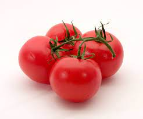
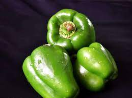

Carrot

The carrot (Daucus carota subsp. sativus) is a root vegetable, usually orange in color, though purple, black, red, white, and yellow cultivars exist. They are a domesticated form of the wild carrot, Daucus carota, native to Europe and Southwestern Asia.
Tomato

The tomato (Solanum lycopersicum) is a botanical fruit, or specifically, a berry (but not a fruit as ordinary people use the word). It is shiny and smooth. It has many small seeds. It is also very good for health.
Capsicum

Capsicum is a genus of plants from the nightshade family (Solanaceae). Some of these plants are used as spices, vegetables, or drugs. The fruit of Capsicum plants have a variety of names.
Mango

A mango is a type of fruit. The mango tree is native to South Asia, from where it has been taken to become one of the most widely cultivated fruits in the tropics. It is harvested in the month of March (summer season) until the end of May. Pakistan and India share the major export market of mangoes.